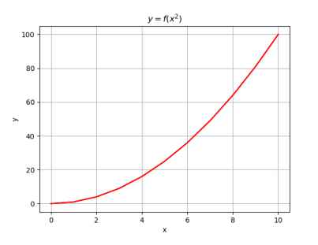

Il est possible de "stocker" plusieurs grandeurs dans une même structure, ce type de structure est appelé une séquence : ensemble fini et ordonné d’éléments indicés de 0 à n − 1 (si la séquence comporte n éléments).
Rappel : nous avons vu dans les chapitres précédents qu’il est possible d’accéder à n’importe quel caractère d’une chaîne de caractères à l’aide de son indice de position (le premier caractère étant indexé 0).
Une chaîne de caractère est donc bien un type de structure fini et ordonné d’éléments indexés de 0 à len(chaine)-1, c’est à dire une séquence.
Il existe d’autres types de séquences que nous allons découvrir ici, notamment les n-uplets (encore appelés tuples) et les listes.
Un tuple est une collection d’éléments séparés par des virgules et généralement entouré de parenthèses même si ce n’est pas une obligation. Cela permet toutefois d’améliorer la lisibilité du code. Le tuple est une séquence immuable (une fois déclaré, le tuple ne peut plus être modifié) d’objets indicés qui peuvent être de tout type : entiers, flottants, chaînes de caractères...
Comme pour une chaîne de caractères, il est possible de parcourir directement les éléments du tuple à l’aide d’une boucle du type : for i in tup
Et également par un parcours des indices :
Comme avec une chaîne de caractères, la fonction len() prenant un tuple comme argument renvoie le nombre d’éléments (longueur) du tuple.
Autre possibilité :
Essayons de modifier un tuple prédéfini :
On constate que python refuse effectivement la modification d’un élément du tuple :
File "/Cours/NSI/Premiere/6-Tuples et listes/pg/tuples_erreurs.py", line 12, in
tup[2]=19
TypeError: 'tuple' object does not support item assignment
Nous souhaitons écrire une fonction qui prend en argument deux nombres entiers et nous renvoie le quotient et le reste de la division euclidienne du premier nombre par le second. Or nous avons vu qu’une fonction ne retourne qu’un seul élément ! Il est possible de solutionner ce problème en demandant à la fonction de renvoyer le résultat sous forme d’un tuple (quotient, reste).
Tout comme un tuple, une liste est une collection d’informations qui peuvent être de même type ou de type différent. Les éléments de la liste sont séparés par des virgules et placés entre des crochets.
Création de listes par affectation :
La grande différence entre une liste et un tuple, c’est que la liste est modifiable
Comme pour les tuples, chaque élément est repéré dans la liste par un indice. Là aussi, l’indexation commence à 0 et non pas à 1.
Il est donc possible d’afficher un par un l’ensemble des éléments d’une liste à l’aide d’une boucle for :
Il est possible d’itérer directement les éléments de la liste (comme pour les chaînes de caractères) :
Pour rajouter un élément dans une liste, par exemple ’juillet’ à notre liste liste_mois, il est possible d’utiliser la méthode append() (to append signifie « ajouter »). L’élément est ajouté en fin de liste. La méthode append() ne permet d’ajouter qu’un seul élément à la fois.
plusieurs éléments peuvent être rajoutés en même temps :
Attention, dans l’exemple qui suit le mois d’octobre sera rajouté en début de liste et non en fin de liste :
Il est également possible d’utiliser la méthode extend() qui permet de concaténer non pas un seul élément mais une seconde liste.
Pour supprimer un élément dans une liste, par exemple l’élément de rang i, il est possible d’utiliser la commande del (del signifie « delete »).
Il est possible de supprimer un élément dans un tableau à partir non pas de son indice, mais de sa valeur. La méthode remove() supprime uniquement la première occurrence trouvée.
Si l’élément n’est pas trouvé, un message d’erreur est retourné et le programme s’arrête, donc bien s’assurer auparavant que l’élément à supprimer est présent dans la liste.
ValueError:list.remove(x: x not in list)
Les compréhensions de listes fournissent un moyen de construire des listes de manière très concise.
Une compréhension de liste consiste à placer entre crochets une expression suivie par une boucle for (ou plusieurs boucles imbriquées) et éventuellement un test conditionnel pour filtrer. Exemple 1 : supposons que l’on souhaite réaliser une liste contenant le carré des nombres de 1 à 10 :
| Méthode classique | Méthode par compréhension |
Il est possible de filtrer la liste précédente en ne prenant que le carré des nombres paires :
| Méthode classique | Méthode par compréhension |
Exemple 2 : création de la liste des caractères qui se trouvent dans une chaîne de caractère (itérable), dans l’ordre où ils sont rencontrés.
| Méthode classique | Méthode par compréhension |
Création de la liste des voyelles qui se trouvent dans une chaîne de caractère (itérable)
| Méthode classique | Méthode par compréhension |
Voici un exemple de liste de listes :
Pour des raisons de lisibilité, il est cependant plus commode de la représenter de la manière suivante, sous forme matricielle :
Pour cibler un élément de la matrice, on peut utiliser la notation avec des doubles crochets :
matrice[ligne][colonne]
Attention : les numéros de ligne et colonne démarrent à 0.
Pour affecter à cet élément la valeur 10 :
Pour parcourir l’ensemble des éléments de la matrice, il faut utiliser 2 boucles for imbriquées :
On peut extraire d’un seul coup toute une partie de la liste : liste[a :b] renvoie la sous-liste des éléments de rang a à b – 1 (l’élément de rang b est exclu). List[ :a] renvoie la sous-liste des éléments de rang 0 à a – 1 (l’élément de rang a est exclu). List [a :] renvoie la sous-liste des éléments de rang a inclus jusqu’au dernier.
La méthode reverse() permet d’inverser une liste et la méthode sort() permet de trier la liste.
Documentation en ligne python :https://docs.python.org/fr/3/tutorial/datastructures.html
Le programme suivant trace la courbe y=f(x2) en utilisant la bibliothèque matplolib.pyplot. Pour cela il est nécessaire de remplir une liste des abscisses des points de la courbe nommée x et une liste des ordonnées nommée y :
Courbe obtenue :
